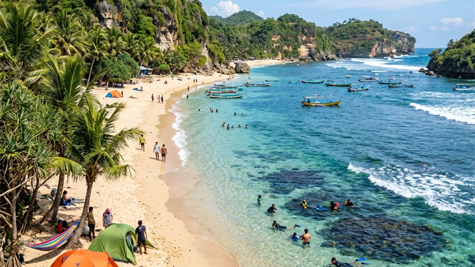

Aktivitas di pantai Malang Selatan meliputi snorkeling, trekking, fotografi, dan camping, dengan waktu terbaik pada musim kemarau antara April hingga Oktober saat cuaca lebih kering dan laut relatif tenang.
- Snorkeling paling ideal dilakukan di kawasan teluk tenang seperti Tiga Warna.
- Trekking singkat tersedia di jalur menuju Pulau Sempu dan area konservasi.
- Camping diperbolehkan di sejumlah titik pantai dengan izin pengelola.
- Musim kemarau menjadi waktu paling nyaman untuk berbagai aktivitas outdoor.
- Musim hujan meningkatkan risiko jalur licin dan ombak lebih tinggi.
Aktivitas Apa Saja yang Tersedia di Pantai Malang Selatan?
Aktivitas yang tersedia di kawasan pantai Malang Selatan meliputi snorkeling di kawasan konservasi, trekking ringan menuju titik-titik tersembunyi seperti Segara Anakan, fotografi lanskap, serta camping di area pantai yang mengizinkan.
Di Sendang Biru, wisatawan juga dapat menyaksikan aktivitas pelelangan ikan nelayan pada pagi hari, memberi pengalaman berbeda dibanding sekadar menikmati pemandangan pantai.
Bagi penggemar fotografi, momen matahari terbenam di Balekambang dan momen air surut yang memunculkan jembatan menuju pura menjadi daya tarik tersendiri yang kerap diburu wisatawan.
Kapan Waktu Terbaik untuk Snorkeling?
Waktu terbaik untuk snorkeling di kawasan pantai Malang Selatan, khususnya di Tiga Warna dan Clungup, adalah pada pagi hingga siang hari saat cuaca cerah dan air laut lebih jernih dibanding sore hari.
Musim kemarau antara April hingga Oktober juga menjadi periode paling disarankan karena visibilitas air cenderung lebih baik dan gelombang laut lebih tenang dibanding musim hujan.
Karena kawasan ini menerapkan sistem kuota harian, wisatawan disarankan melakukan reservasi lebih awal untuk memastikan slot kunjungan tersedia pada waktu yang diinginkan.
Apakah Camping Diperbolehkan di Kawasan Pantai?
Camping diperbolehkan di sejumlah titik pantai Malang Selatan, termasuk beberapa area di kawasan Sendang Biru dan sekitar Balekambang, dengan izin dan koordinasi terlebih dahulu kepada pengelola setempat.
Wisatawan yang berencana camping perlu membawa perlengkapan sendiri karena fasilitas penyewaan tenda masih terbatas di sebagian besar lokasi. Penting juga memperhatikan pasang surut air laut agar area tenda tidak terkena air saat malam hari.
Di kawasan konservasi seperti CMC Tiga Warna, aktivitas camping umumnya lebih diatur ketat dan memerlukan izin khusus mengingat statusnya sebagai area pelestarian ekosistem pesisir.
Bagaimana Perbedaan Suasana Musim Kemarau dan Musim Hujan?
Musim kemarau antara April hingga Oktober menghadirkan cuaca lebih kering, jalur akses lebih mudah dilalui, dan air laut cenderung lebih jernih untuk aktivitas snorkeling di kawasan pantai Malang Selatan.
Sebaliknya, musim hujan antara November hingga Maret meningkatkan risiko jalur licin di jalan berkelok menuju pantai, serta ombak yang cenderung lebih tinggi sehingga sejumlah aktivitas air perlu dibatasi demi keselamatan.
Wisatawan yang tetap ingin berkunjung pada musim hujan disarankan memantau prakiraan cuaca dan kondisi jalan sebelum berangkat, serta menghindari aktivitas berenang di area ombak besar.
FAQ
Apakah snorkeling di Tiga Warna perlu reservasi?
Ya, kawasan ini menerapkan sistem kuota sehingga reservasi awal disarankan.
Apakah semua pantai Malang Selatan bisa untuk camping?
Tidak semua, sebagian area memerlukan izin khusus terutama kawasan konservasi.
Kapan waktu terbaik untuk trekking di sekitar Pulau Sempu?
Musim kemarau menjadi waktu paling disarankan karena jalur trekking lebih kering dan aman dilalui.
Apakah bisa mengunjungi lebih dari satu pantai dalam sehari?
Bisa, dengan merencanakan rute berdasarkan kedekatan lokasi antar pantai untuk efisiensi waktu.
Arya
Siswa Skariga yang sedang belajar di Gm Academy.